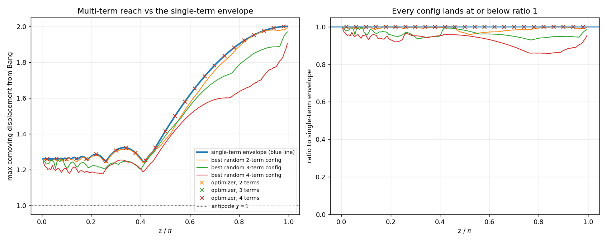
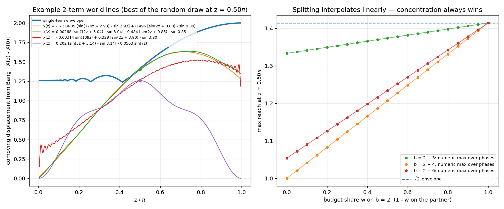

Nobody beats the blue line: multi-term phase combinations stay under the single-term reach envelope
Numerical stress test (no campaign) · analysis module + tests
2876484
Kevin asked whether the 07-16 reach chart really covered all possible
phases — and, fairly, wanted data rather than just the linearity
argument for the multi-term case. The claim under test: with the unit
rapidity budget Σ|a·b| = 1 split across k terms, no choice
of frequencies, budget shares, amplitude signs, or phases can out-reach
the phased single-term envelope (the blue line) at any time. Two
attacks: a 200,000-config random sweep per k ∈ {2, 3, 4} drawn
from the actual sampling ensemble (distinct integer frequencies,
Dirichlet budget splits, f ~ U[0, 2π) on even frequencies, f ∈
{0, π} on odd), and a Nelder-Mead adversary at 25 fixed times, free
to pick any signed budget split and any admissible phases over
frequency sets seeded with the top single-term performers.

Left: the phased single-term envelope vs the best multi-term configs
found. Right: everything as a ratio to the envelope — no point
exceeds 1.
The optimizer converges to the envelope exactly
(ratio 1 at every probed time, worst excess +2.2×10−16
— machine epsilon, never above): its
winning move is always to concentrate the whole budget on the best
single frequency at its optimal phase — it rediscovers the
linearity argument numerically. At π/2 the 2-term adversary
lands on √2, the b = 2, f = π/4 optimum, to 1e-4.
Random ensemble configs approach from below and never
cross: best sweep ratios 0.99990 (k = 2), 0.99825
(k = 3), 0.98912 (k = 4). More terms reach less —
each extra term dilutes the budget, exactly as
Σwiri ≤ max ri
predicts.
Phase coverage is exact, not sampled. The
displacement is linear in (sin f, cos f), so the envelope's
hypot(Δα, Δβ) is the analytic maximum over
the whole continuous phase circle; the ensemble reaches all of it
because f ~ U[0, π) plus the ± amplitude sign covers
[0, 2π) (a → −a ≡ f → f + π), and odd
frequencies admit only f ∈ {0, π} (loop closure), both
covered by the |Δβ| branch.
Locked in tests/test_multiterm_reach.py: the random sweep
never exceeds the envelope, the optimizer saturates at it, and the
π/2 optimum is √2.
What the tried functions actually look like: example 2-term worldlines and the split-linearity line
Numerical stress test (no campaign) · analysis module + tests
7f711e0
Follow-up to the entry above: Kevin wanted to see concrete examples of
the functions the sweep tried, to make sure the budget really is being
split across terms. Every sampled config is a genuine worldline
x(z) = Σi ai[sin(biz +
fi) − sin fi] with amplitudes
ai = ±wi/bi, so the rapidity
budget Σ|aibi| = Σwi = 1
exactly (verified to 1e-12 on every example). The four shown are the
two best free draws at z = π/2 plus the two best genuinely
split draws (every term forced to hold ≥ 30% of the
budget):
x(z) = −6.3e−5 [sin(170z + 2.93) − sin 2.93] + 0.495 [sin(2z + 0.88) − sin 0.88]
— disp 1.4031 (0.992 of √2). The best free draw
self-concentrates: 99% of the budget on b = 2 near the optimal
phase π/4, a whisker of budget wasted on b = 170.
x(z) = −0.00314 sin(109z) + 0.329 [sin(2z + 3.80) − sin 3.80]
— a real 34/66 split (odd b = 109 carries
0.00314×109 = 0.34 of the budget); disp 1.2622, only 0.89
of the envelope.
x(z) = 0.202 [sin(3z + 3.14) − sin 3.14] + …
— the odd-frequency phases show up only as f ∈
{0, π} (here b = 3 at f = π, b = 7 at f = 0), the loop-closure
constraint; a 60/40 split reaching 0.89 of the envelope.

Left: example 2-term worldlines with their explicit formulas; dots
mark their displacement at z = π/2. Right: reach vs budget split
for fixed pairs, maximized over all phases and signs at every w
— exactly the straight line w·r1 +
(1−w)·r2.
The right panel is the whole argument made visible: for any frequency
pair, the phase-maximized reach is exactly linear in the
budget split (numeric dots on the predicted line to 2e-5, locked in
tests/test_multiterm_reach.py), so the maximum over
splits always sits at an endpoint — concentration. Splitting
with b = 2 + 4 at w = 0 shows the even partner's reach 1.0 exactly
(b = 4's own phased optimum at π/2); no interior w ever pokes
above the √2 dashed line.